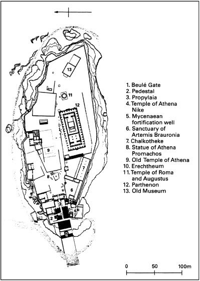
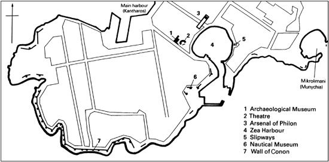

Masterpieces are not single and solitary births; they are the outcome of many years of thinking in common, of thinking by the body of the people, so that the experience of the mass is behind the single voice.
(From Virginia Woolf, A Room of One’s Own)
‘It was a dark and stormy night…’. So began a novel by the Victorian fabulist Edward Bulwer Lytton (author of the bestselling The Last Days of Pompeii), and so goes the annual Bulwer Lytton prize for the ghastliest opening of a contemporary work of fiction. But Lytton was a fabulist of a different sort too, as has only recently been made widely known. He was one of the very first, if not actually the first, to proclaim the virtue of ancient Athens as the forerunner, indeed founding mother, of Democracy. Thitherto the Western tradition of political thought and ideology had been overwhelmingly anti-democratic and, correspondingly, pro-Spartan. But the rise of a new, modern kind of representative democracy above all in the United States and Britain, the establishment of a new Greek state, and the increasing prestige throughout Western Europe of ancient Greece as a supposed political ancestor and role-model in the nineteenth century meant that attitudes to Athens’s in fact very different, direct style of democracy softened remarkably. The enhanced esteem of Athens from the 1830s on has held its own to this day, helped by the association of Sparta with authoritarian or totalitarian regimes, and reinforced by admiration for Athens as what Plato called ‘the city hall of Wisdom’ and Thucydides’s Pericles hailed as ‘an education for all Hellas’—giving birth to an extraordinary flourishing of high culture based on notions of freedom and equality (only for some, of course).
Not only did Classical Athens, helpfully located 8 kilometres inland, grow to be the biggest city in the Greek world before the foundation and rise of Alexandria in Egypt, but it was also by far the most complex Greek city. Indeed, one could say that in a sense ‘Athens’ is misleadingly reductionist, for it was actually three cities rolled into one. First, there was Athens considered as a political entity, a polis, that is, an urban centre together with its surrounding khôra or countryside known as Attikê (literally, ‘the land of the Athenians’) encompassing some 2,400 square kilometres (1,000 square miles)—placing it at no. 3 (after Sparta and Syracuse) in the entire Greek world, and in the top 10 per cent (about 100) of poleis possessing above 500 square kilometres. (The ‘normative’ polis had a territory of fewer than 100.) Looked at differently, this entity was composed from about 500 BCE onwards of no fewer than 139 demes or ‘villages’, all but a very few of them located in the countryside as opposed to the urban centre. Second, there was the Athenian Akro-Polis, or ‘High City’ located within that wider entity, which was sometimes referred to simply as ‘polis’, a mark of its symbolic centrality (Fig. 4). This perhaps had been the location of a Mycenaean palace, and as late as the sixth century had possibly served as the seat of government for a family of ‘tyrants’ or autocrats, known as the Pisistratidae, or ‘Pisistratus and his descendants’. But by 500 BCE at the latest it had become an overwhelmingly religious space, even if the Athenians’ attitudes to religion were so different from ours that they could see nothing odd in housing the state’s principal financial reserves, its ‘central bank’, in a temple (the Parthenon). Linked to it organically at its foot from about 600 on was the Agora, literally the place of civic gathering, the commercial as well as political heart of Athens; and nearby, within sight, was the Pnyx hill, where met the Athenian Assembly (ecclêsia) in the post-tyranny democratic period. Third, the polis (political entity) of Athens was the only Greek city to have spawned a ‘double’, a second city in the urban sense within its territory, viz. its port city of Piraeus; this grew to such a degree and at such a pace in the fifth century BCE that the Athenians called in Hippodamus from Miletus to try to tame and to zone its sprawl on something like a grid-pattern of streets and public spaces.
For those reasons alone Athens would surely seem to merit three times the space allotted to any other Greek city that one might choose to single out. But for various reasons, both endogenous and exogenous, Athens has also generated many more times more data, archaeological and art-historical as well as written, than any other city. As a character in a dialogue of Cicero nicely puts it, ‘Wherever we go in this city, we seem to be stepping on a piece of history’. And as neat an example as any of this deeply stratified history was made known in 2002, with the excavation of a marble slab recording 80 names of Athenian citizens—casualties it is claimed of the Sicilian expedition (below). The slab, originally from a cenotaph displayed in the Classical city’s chief public cemetery, the Cerameicus (‘Potters’ Quarter’), had been incorporated in a defensive wall of the late Roman period (fourth to fifth century) and was excavated below a Neoclassical building of the nineteenth century as part of the preparations for the display there of the Benaki Museum’s Islamic collection (the eponymous Benaki being a Greek from Alexandria in Egypt).
The resulting scholarly and popular tendency towards Athenocentricity is of course rigorously to be guarded against, but it is very hard indeed to limit Athens’s word-share here in line with that granted to the other chosen cities without appearing to be merely eccentric or capricious. There is a further complicating or aggravating factor: for a period from about 450 to 400, which is often labelled a ‘Golden Age’ or the ‘Periclean’ Age, after its greatest statesman, the history of the entire Greek world can and indeed should be written around the history of Athens.
Mythically, like Cnossos, Mycenae, Argos, and Sparta, and indeed any Greek city of any antiquity or pretensions, Athens was able to point to a fabled past. One of its foundation myths actually represented two Olympian deities—Athena and Poseidon—as engaging in a rather unseemly contest for the role of principal city patron or presiding genius: a contest in which Athena had perhaps an unfair advantage by virtue of her very name, not to mention her unique birth from the head of her father Zeus. Anyway, Athena triumphed, helped further by her warlike persona, her concern with practical wisdom and skills, and, not least, her useful gift to Athens of the olive-tree. On Classical Athenian silver coins the helmeted head of Athena on the obverse (front) side is adorned with an olive wreath, while on the reverse appears her familiar creature, the little skops owl symbolizing wisdom accompanied by a delicate olive spray (Plate 12). Another set of foundation myths spoke of an early king Erechtheus, who somehow became confused with a snaky character called Erichthonius, but both of those were ousted in historical times by two other kinds of origins myth (in which Athens was unusually rich, a reflection of the complexity of its true historical origins).
First, there was the seemingly outrageous claim that Athenians were descended ultimately from the very soil of Attikê itself, from which the aboriginal Athenians had been born. The aim and function of this myth of ‘autochthony’ were to reinforce an invented, artificial sense of close genetic community among a people of in fact very diverse origins and backgrounds. Second, there was the congeries of myth surrounding Athens’s supposed founding ‘national’ hero, Theseus. Not only was he credited with bringing about the synoecism of Attica, that is, the synthesis of the disparate Attic villages into a single entity, the polis of ‘the Athenians’ that finessed the separate identities of the various villages and districts. On top of that, when Athens had become a democracy in about 500 BCE, Theseus was credited mythically with being the founder of that political system too, although he did have to share the—no more historically authentic—limelight with the two ‘Tyrant-Slayers’, Harmodius and Aristogiton, who had actually killed a tyrant’s brother, not the tyrant himself, and several years before democracy was in fact introduced at Athens.
Behind such myths there may lie, dimly, some correct historical memory. For instance, Theseus’s slaying of the Minotaur (‘Bull of Minos’) in the labyrinth at Cnossos may somehow reflect relations between Athens and Minoan Crete. But the sober, authentic record of archaeology is a surer guide, and what that shows both in Athens itself and in Attica is that this region of the Mycenaean and immediately post-Mycenaean world suffered less severely than some others, for example Messenia in the south-west Peloponnese, and recovered far more quickly from the catastrophe of c.1200, lending some credibility to the mythic notion that Athens played some important role, if only as a marshalling centre, in the ‘Ionian migration’ of the eleventh and tenth centuries (see Chapter 5). Any real economic ‘take-off’, however, is not detectable before the mid-ninth and especially the eighth centuries, when the evidence of graves from the Cerameicus cemetery above all suggests some major improvement in both domestic prosperity and external communications; there may indeed have been substantial immigration, including that by skilled craftsmen from Phoenicia (the ultimate source of the new Greek alphabetic literacy, as we saw).
The seventh century, however, archaeologically, seems to have been a time of recession for Athens and Attikê, and when the city emerges from the relative gloom into the light of something like credible history, it is to be found in a state of stasis—a word that could encompass anything from civil disturbance or strife to outright civil war. Somewhere around 620 a lawgiver called Draco sponsored a series of measures prescribing drastic punishments (whence our ‘draconian’) for a variety of crimes. But if that was intended to quell political unrest, it failed, since a second, far more effective lawgiver was required, and it is with the career of Solon that the history proper of Athens begins. Himself a wealthy aristocrat, in 594 he was called upon in extremis to resolve a complicated political struggle. This was being fought out between old-style, reactionary aristocrats, the more progressive aristocrats like himself, and other rich non-aristocrats, on one side, and, on the other, the mass of the poor citizens of Athens, the dêmos, as Solon refers to them in his poems, many of whom were in crippling debt to one or other kind of rich citizen. This stasis of 594 was not the first nor by any means the last stasis to afflict Athens—the most notable of the series perhaps being those of 411 and 404, to which we shall return. What distinguishes this one is that Solon’s solution proved so workable and enduring that in retrospect it could seem to have anticipated in crucial ways the democratic revolution of the end of the sixth century. For that formidable achievement alone Solon merited his inclusion among some lists of the ‘Seven Sages’ of old Greece.
Between Solon’s limited empowerment of the Athenian citizen masses and Cleisthenes’s far more radical, truly democratic empowerment in 508/7 (dêmokratia means ‘power of the dêmos’) came the dynastic tyrant regime of the aristocrat Pisistratus (died 527) and his son Hippias (overthrown 510, four years after the murder of his brother by the ‘Tyrant-Slayers’). What these Pisistratids achieved above all, partly by basing themselves on Solon’s economic and political reforms, was to bring about a strong sense of Athenian—or rather Attic—cultural unity and a weaker but still significant degree of participation in everyday politics by ever-widening layers of the population. Cleisthenes, therefore, the man credited with godfathering the democratic reform-package of 508/7, had a firm foundation on which to erect his new political structure, based on a redefinition of the state’s political geography. Besides vastly increasing the degree of popular participation, this reform also increased Athens’s military potential immeasurably.

Athens’s participatory potential was fulfilled magnificently on the battlefield of Marathon in eastern Attikê in the summer of 490. Athens’s later military history would lead one to expect that Athens must always have been strong chiefly on the sea, but actually it wasn’t until the very decade that culminated in Marathon and the one succeeding it that Athens turned its collective mind seriously to developing naval strength. Marathon therefore was essentially a hoplite victory, masterminded by a strategist with a colourful past, a for-long émigré aristocrat called Miltiades who back in the 510s had wielded a personal tyranny in the Persian interest in the Thracian Chersonese, what we today think of as the Gallipoli peninsula to the west of the Dardanelles (Hellespont).
But after the democratic revolution of 508/7 the Athenians came to see the empire of Persia as a wicked oriental despotism, from which Athens’s Ionian kinsmen of Asia Minor deserved to be liberated. Their aid to the Ionian Revolt in 499 was (as we have seen in Chapter 5) both inadequate to secure the Ionians’ liberation and a fateful link in the causal chain leading to the Persian Empire’s first attempt to pacify, possibly subjugate, at least some of the pesky Greeks of the mainland. In 490 Great King Darius I entrusted a naval assault to the command of Artaphrenes, a high-ranking member of the royal family, and Datis, a Mede (like the first conqueror of the Asiatic Greeks) with proven experience of naval command. All went well at first—Eretria on Euboea, another of the Greek cities that had aided the revolted Ionians, was destroyed and some of its survivors transported deep into the Iranian heartland. But then came Marathon, a stunning Persian defeat caused it seems largely by the intransigent boldness of the Athenian hoplites’ charge, in which allegedly 6,400 were killed on the Persian side as against a mere 192 Athenians (whose fellow-countrymen transformed them into heroes to whom official religious worship was paid). Beside the Athenians there fought the men of just one other Greek city, little Plataea in Boeotia, whose own soil was to be the scene of a yet more decisive Greek victory over an invading Persian force eleven years later.

Fig. 5. Athens—Plan of Piraeus
If Miltiades was the hero of Marathon, already just a few months later he was a man of the past. The future of Athens, commercially as well as militarily, lay on the sea—as the preternaturally farsighted Themistocles anticipated. One of Athens’s—and Greece’s—rare natural-resource advantages was the possession of silver-bearing lead deposits in the area of Laureum in south-east Attikê; in 483/2 an unusually rich seam of this metal was struck, and rather than allow them to indulge themselves in a mass handout Themistocles persuaded the democratic assemblymen to devote the windfall to the construction of Greece’s finest, largest, and most up-to-date fleet of trireme oared warships, based in Piraeus (Fig. 5). Each trireme (see Glossary) was a glorified racing-eight (170 rowers) cum water-borne guided missile. Light and fast, with only a very small (thirty in all) complement of officers, steersman, flute-player, and marines, the trireme was not a Greek but a Phoenician invention—one that the Greeks had been rather slow to adopt because they were not just complicated but also very expensive to build and even more expensive to maintain and crew. Only a city like Athens with abundant natural resources of silver, procured by the forced labour of thousands of chattel slaves, could have even contemplated, let alone successfully effected, the commissioning of an efficient new trireme warfleet of 200 or more ships. Not to mention putting it into highly effective action within a couple of years.
It was this fleet that destroyed the Persian (mainly Phoenician) navy in the strait off the islet of Salamis in August 480—not quite sealing the doom of the massive expedition launched earlier that year by Darius’s son Xerxes, but making the task of Mardonius, the commander whom Xerxes left behind to finish the job of conquest, considerably harder. Even so, when all the odds are reckoned up, Mardonius should probably still have defeated the rather rackety coalition of a mere thirty or so squabbling Greek cities that opposed him. But the mettle and skill of the Spartans by land at Plataea in the summer of 479 were every bit the equal of the Athenians’ at sea at Salamis, and there remained little to do beyond mopping up thereafter, which occurred under Athenian naval leadership at Mycale on the Asiatic coast just opposite the island of Samos. But what next? The Spartans, a landlubbing people by nature, location, and habituation, indulged their wish to withdraw from any further Aegean or Asiatic entanglements. So, the great struggle for the liberation of the Asiatic Greeks was spearheaded by the one city with the capacity and experience as well as the will: Athens.
What we call the ‘Delian League’ was a basically naval military alliance presided over and indeed constructed by the Athenians in the winter of 479/8. The formalities of oath-taking, including swearing solemnly by the gods that the alliance would last as long as it took not only to defeat but permanently to resist the Persian empire, were concluded on Apollo’s sacred island of Delos, site of an annual festival of Ionian Greeks. The master of ceremonies was the Athenian general Aristides, nicknamed ‘the Just’ thanks to the perceived equity of the arrangements he imposed for regular payment of tribute and other contributions. From the start, however, it was a predominantly Athenian show—an ATO (Aegean Treaty Organization) or DPP (Delos Pact Powers), rather than an equal alliance. Most of the upwards of 200 members were small and insignificant, wholly dependent on Athenian might and good will, and mostly content to pay the required contributions in money or men as long as Athens did not unduly exploit its hegemonic position. At its height, Athens’s income from both external and internal sources in the later fifth century amounted to some 1,000 talents per annum—a figure not exceeded by any Greek state until the reign of Philip of Macedon.
Within a very few years, however, some of the more powerful allies, such as the island-state of Naxos, decided that Athens was indeed being unduly exploitative and wanted out of the alliance, only to be coerced back in, with added indemnities and indignities heaped upon them. From that day to this, debate has raged over the ‘popularity’ of the Athenians’ empire (as it is usually called)—can an empire be in any true sense democratic; or, conversely, can a democracy run an empire efficiently?
On top of the alliance’s stated enemy, Persia, Athens increasingly found itself opposed—at first covertly and indirectly—by the leaders of the only other multi-state Greek military alliance with any clout: the Spartans at the head of their Peloponnesian League (another modern label). A number of niggles between the two would-be Aegean Greek ‘superpowers’ escalated into something like a cold war with the attempted secession from Athens’s league of the wealthy and strategically important island-state of Thasos in 465. Cimon, son of Miltiades of Marathon fame, was on hand to quell this, as indeed he had been the principal architect of Athenian naval influence almost from the alliance’s inception. He personally favoured a ‘dual hegemony’ between Athens and Sparta, and had programmatically named one of his sons ‘Spartan’ to make the point. But from cold war between the two blocs to hot, or at least lukewarm, war was but a short step. In 460 a conflict broke out mainly in central Greece that is usually known, oddly and anachronistically, as the First Peloponnesian War (460–445)—‘First’ in deference to ‘the’ great Atheno-Spartan Peloponnesian War that ensued (431–404).
It is hard to tell who ‘won’ this First Peloponnesian War. The peace agreement that concluded it involved centrally the mutual recognition by Sparta and Athens of each other’s sphere of influence. Far more exciting, in terms of not just Greek but Western, indeed almost global history, are two other, closely interrelated phenomena: what was going on at Athens off the many battlefields in the decades between 460 and the outbreak of ‘the’ Peloponnesian War in terms of public architecture and democratic empowerment. Architecturally, the Agora of Athens began to look something like a truly urban civic centre, as Piraeus developed in parallel as Athens’s port city. Up above the Agora reared as ever the Acropolis, but from 450 or so on, thanks to a massive injection of central funds masterminded by Pericles, an astonishing building programme produced above all the Parthenon (built 447–432), with its massive cult-statue and sculptural scheme fashioned by Phidias, and, later, the Erechtheum (Plate 10), both temples dedicated to versions of the city’s patron goddess Athena.
Large numbers of outsiders, Greeks and non-Greeks, itinerants and permanent residents, were attracted to this extraordinarily, unprecedentedly prosperous and powerful imperial city. These included slave-owning arms-manufacturers such as Cephalus from Syracuse, philosophers known as Sophists (literally ‘purveyors of skill or wisdom’) such as Protagoras from Abdera or Gorgias from Leontini in Sicily, and craftsmen, as well as bankers and merchants and—in huge numbers, and very much against their will—slaves. In parallel Athens produced from amongst its own citizen ranks a stunning series of dramatists—Aeschylus, Sophocles, Euripides, Aristophanes…, historians such as Thucydides, and master-craftsmen and architects such as Phidias, Ictinus, Callicrates…Nor was it only Athens that contributed to the major feats of this cultural heroic age. Hippocrates from the eastern Aegean island of Cos, ‘father of Western medicine’, and Polyclitus of Argos, creator of a male nude statue named ‘Canon’ (‘Ideal Standard’) thanks to its ideal proportions and skilful modelling (Plate 6), were just two of its many other ornaments.
Bliss it was in that dawn to be alive, especially for ordinary relatively poor members of the Athenian citizen body who found their increasingly vital military role in rowing the warfleets increasingly rewarded with a significant increment of democratic political power, including public political pay for serving on juries in the People’s lawcourts. The reforms of Ephialtes assisted by the young Pericles in 461 set the seal on half a century of democratic advance. Rarely indeed have ordinary people been so empowered—ordinary adult male citizen people, that is, since the Athenians were jealous of their perks and privileges, and, as the citizen body soared up to the 50,000 mark (out of a total population of some 250,000–300,000, as against the ‘normative’ polis’s few hundreds or thousands), they were quick to clamp tight restrictions on access via marriage laws; the most important of these, sponsored by none other than Pericles in 451, prescribed that to be a citizen one had to have been born not just male but the son of two lawfully wedded Athenian citizen parents.
One reason for legislating in this way was the exceptionally large number of metics or resident aliens attracted to Athens chiefly for economic reasons from other parts of the Greek world and indeed from outside it too, for example Phoenician Citium on Cyprus. Metics are attested in some seventy Greek cities, but easily the largest contingent, some 10,000 at the maximum, was to be found at Athens, despite the fact that both sexes had to pay a monthly poll tax, and the adult males were liable for conscription, besides being required to be registered in a deme via a citizen sponsor. Some Athenian metics, indeed, were sufficiently wealthy and cultivated or in other ways attractive to get to know Athenian citizens on very intimate terms indeed: one thinks again of Aspasia of Miletus, Pericles’s partner in life (see Chapter 5), or of Cephalus of Syracuse, already mentioned, allegedly invited to Athens by Pericles himself, whose house in the Piraeus Plato chose as the setting for his discussion of political theory in the Republic. These personal connections of Pericles place his sponsorship of the 451 citizenship law in an interesting light: clearly this reform was a popular measure in both senses, rather than one that Pericles desired for his personal convenience or satisfaction. Even so, some modern historians think that an unusually increased birthrate will still have created an adult male citizen population of 60,000 in the 430s, necessitating quite extensive export of citizens to existing and new settlements abroad within the empire, and serious increase in the importation of foodstuffs, especially bread-wheat from what are the Ukraine and Crimea today.
With hindsight, it is easy to say that Athens must have been riding for a fall. That, too, was how some ancient Greeks saw the Athenians’ rollercoaster trip from hybris (overweening pride and insult to the dignity of other Greek cities) to nemesis (justified, probably divine retribution) through the imbroglio of the Atheno-Peloponnesian War, a ‘world war’ against the other Greek superpower, Sparta, which Sparta—with crucial Persian financial aid—won. But apart from the admittedly devastating plague that hit Athens in 430 (poignant mass burials have very recently been excavated during the construction of Athens’s metró (underground railway) system), honours during the first, ten-year phase of the war were quite even, as the terms of the Peace treaty of 421, quickly followed by a separate pact between just Athens and Sparta, readily recognized.
What initially turned the tables, as Thucydides most graphically demonstrated in his unfortunately truncated history, was Athens’s disastrous Sicilian expedition of 415–413 (undertaken when Athens was supposedly at peace with Sparta). The principal object of that expedition was Syracuse, the subject of our next chapter. Athens nevertheless recovered extraordinarily well from that self-imposed setback in the short run, to the extent that twice Sparta sued for peace, but on terms that Athens felt compelled to reject.
In the final phase of the War (413–404) fighting was concentrated mainly in two theatres. First, there was Attikê itself, Athens’s own home territory, where a Spartan king (Agis II) occupied the town of Decelea in 413 and camped there for the next eight years, within sight of Athens’s city walls. Apart from the devastating effect on Athenian morale, this occupation had three major deleterious effects: it prevented the Athenians living in the vicinity both from tilling and harvesting their fields; it deterred these and other potential investors from working the Laureum silver-mines; and it encouraged the flight of more than 20,000 slaves, most of them skilled in handicrafts, mining, or agriculture. Many of these fled to Agis’s enclave at Decelea, where they unfortunately did not achieve their liberation but were sold on by the Spartans’ official ‘booty-sellers’ to new Boeotian and particularly Theban owners (see Chapter 10).
The other main theatre was in the eastern Aegean and up into the narrows leading to the Black Sea (see Chapter 12). The warfare hereabouts is often referred to as the ‘Ionian’ war, since Anatolian Ionia including Miletus suffered a good deal of the action. The key players on either side were the Spartan admiral Lysander and the Athenian Alcibiades (both subjects of a Life by Plutarch). Alcibiades came from an aristocratic Athenian family with Spartan connections and seems never to have held any settled political views, but rather followed where his charismatic ambition and incessant self-promotion drove him. Chiefly responsible for persuading the Athenians to embark on the Sicilian adventure of 415–413, he also fatally undermined its chances of success when he was prosecuted for impiety by his democratic enemies and rather than return to face trial in Athens defected to…Sparta in 414. It was on his advice to the Spartans that the occupation of Decelea was undertaken. The combination of that occupation with hopes falsely raised by Alcibiades of Persian financial support if Athens ceased to be a democracy helped provoke a savage oligarchic counter-revolution in 411, the brains behind which seems to have been the legal expert, speechwriter, and philosopher Antiphon. Though quickly succeeded by a less extreme version of oligarchy, the regime of ‘the 400’ sapped Athenian morale and did lasting damage, exhibited most plainly in the Assembly’s irrational decision in 406 to condemn to death collectively all the Generals in command at the—victorious—Battle of Arginusae!
Lysander was no whit less ambitious than Alcibiades and in his way as unconventional. It was through his personal relationship with the young Persian prince Cyrus that Sparta in 407 and again in 405 secured the vast influx of capital required to build fleets that could challenge and eventually defeat Athens in its own backyard. The end came at Aegospotami (‘Goat’s Rivers’) in the Hellespont, where Lysander tricked, defeated, and destroyed a large but by then dysfunctional Athenian fleet. He followed that up with a blockade of Athens and Piraeus, until in spring 404 a starving Athens was forced to concede total victory and make an ignominious surrender to Sparta on the harshest terms.
Athens never quite recovered its old glory after 404, when, after that winter of starvation and total surrender, it suffered murderous civil war under a particularly vicious bout of rule by a junta of just thirty extreme oligarchs (the ‘Thirty Tyrants’) led by Critias; and, although democracy was restored in 403, Athens’s democratic copybook, many feel, was indelibly blotted by the trial and condemnation of Socrates in 399. He was tried and convicted on a twofold charge of not duly acknowledging the gods the city of Athens acknowledged (and inventing his own brand-new divinities that the city did not and would never acknowledge), and of corrupting the young, meaning that he had taught men of the stamp of Alcibiades and Critias, traitors to the democracy. The charges may have been only partially true, but a majority of the 501 jurors were persuaded to vote him guilty, and even more to sentence him to death (by a self-administered draught of hemlock). Socrates died the death of a philosopher, according at least to his most famous disciple, Plato (a relative of Critias).
Yet all the same, an age of continued moderately expressed democracy that produced a Plato (died 347), the master-sculptor Praxiteles, the orator Demosthenes (died 322), the statesman Lycurgus, and the comic poet Menander, and gave a home to Aristotle (died 322) and his Lyceum institute for advanced study, was nothing to be ashamed of. Indeed, Athens went on to recover somewhat of its old imperial power by way of its Second Athenian League founded in 378—of which its former enemy, and former Spartan ally, Thebes was temporarily a founding member. Within a decade of that, moreover, Sparta was gone as a great power. But Thebes, alas for Athens, was not, and so in the 360s Athens actually allied with Sparta—against Thebes.
The predictably fatal outcome of all this mutually antagonistic triangulation will be explored further in a later chapter (on Thebes). But, to end this chapter on a happier note, it is worth remarking that Athens, through its legacy of democratic empowerment, artistic genius, and open philosophic speculation above all, came to stand as emblematic of ‘Classical’ Greece in its ‘best’ period. As such, the city—though by then a mere village—was chosen in the 1830s as the permanent capital of the new, liberated state of ‘Hellas’.